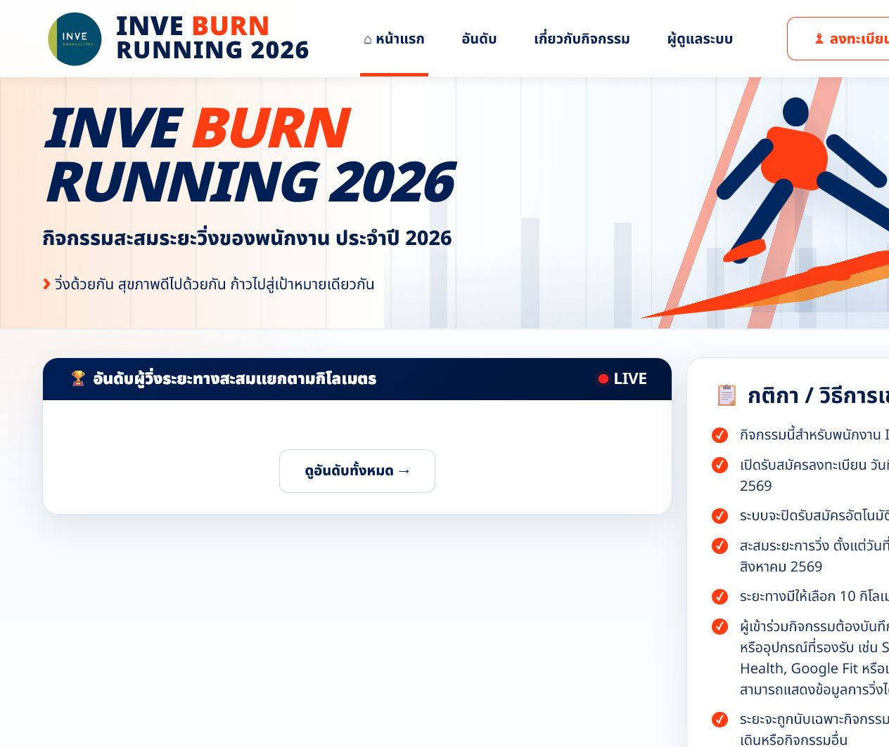
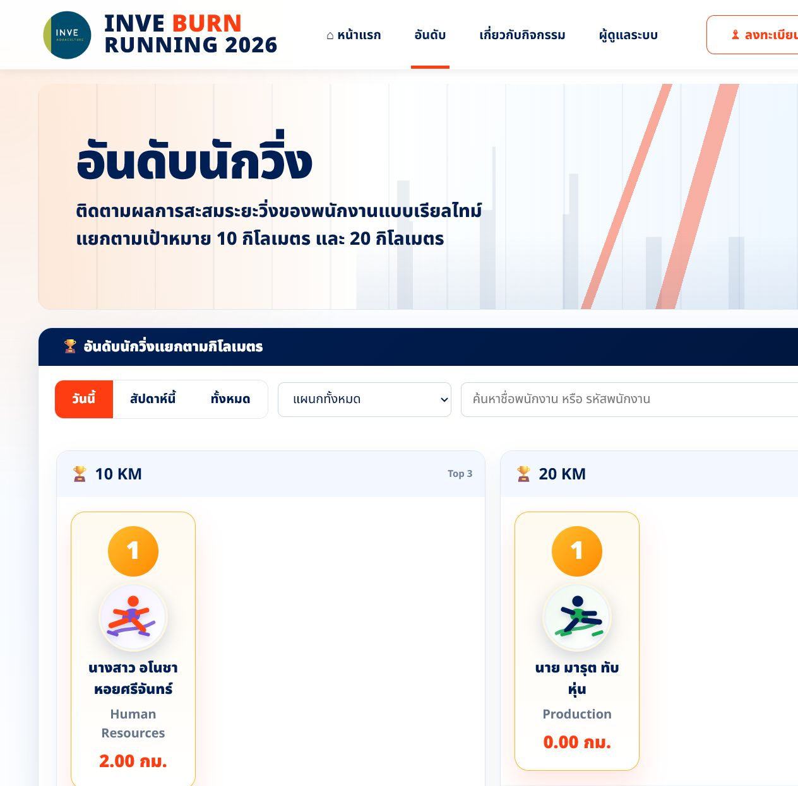
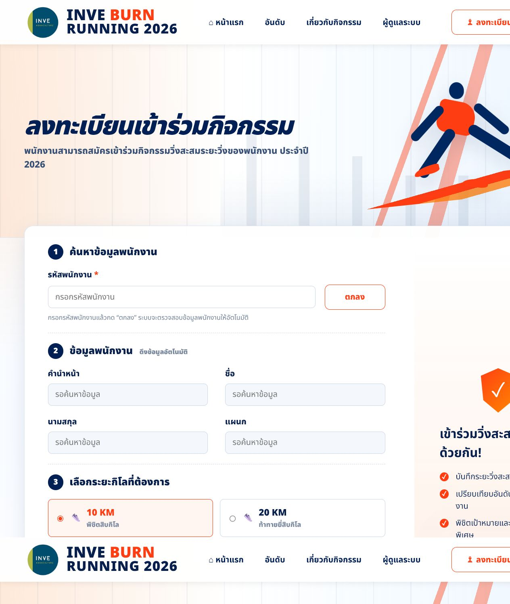
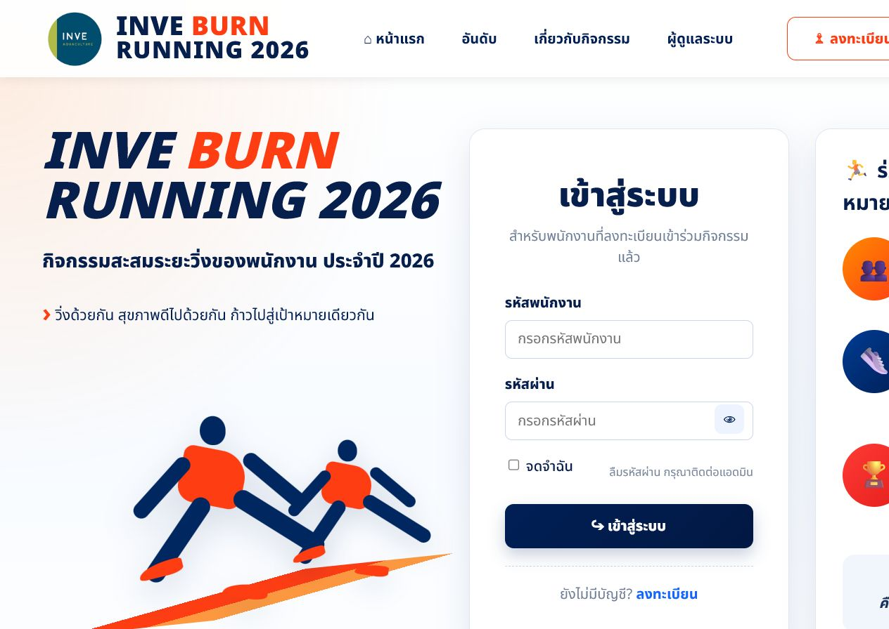
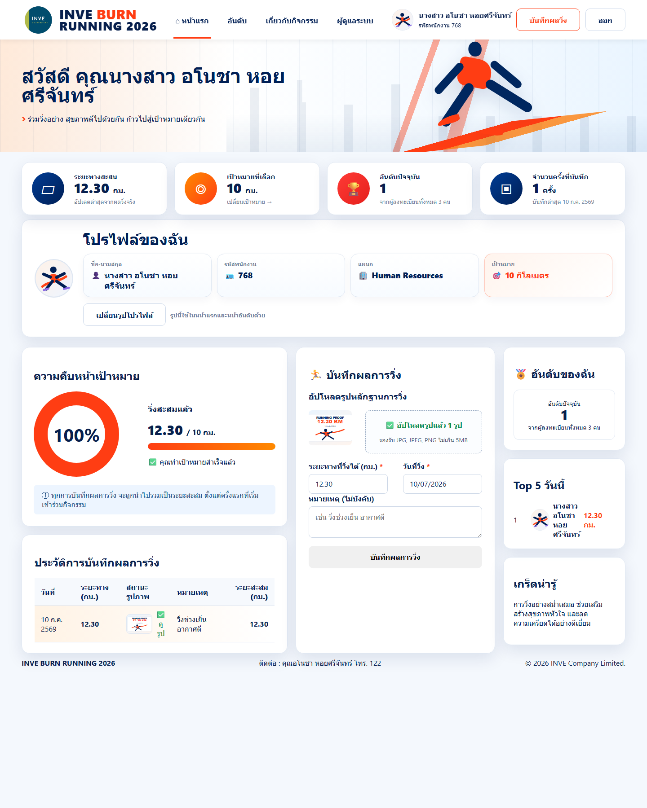
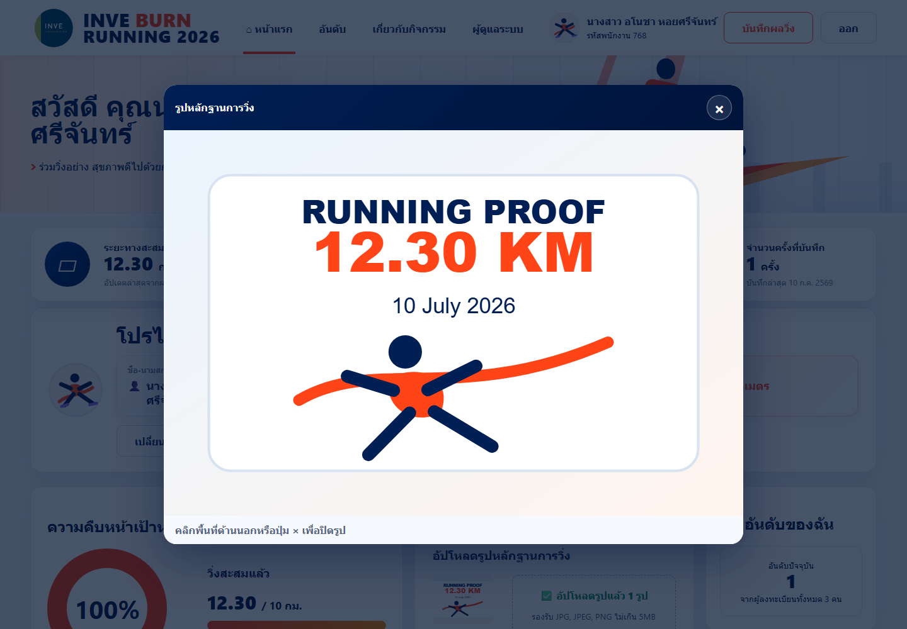

RUNNING 2026
คู่มือการใช้งานสำหรับพนักงาน
คู่มือนี้สำหรับพนักงานที่เข้าร่วมกิจกรรม INVE BURN RUNNING 2026 ใช้อธิบายการสมัคร เข้าสู่ระบบ เปลี่ยนรูปโปรไฟล์ บันทึกผลการวิ่ง อัปโหลดรูปหลักฐาน และดูอันดับของตนเอง
📌 เว็บไซต์ใช้งานจริง: inve-burn-running.vercel.appสารบัญ
ภาพรวมระบบ
ระบบ INVE BURN RUNNING 2026 เป็นระบบสำหรับกิจกรรมสะสมระยะวิ่งของพนักงาน โดยพนักงานสามารถลงทะเบียน เลือกเป้าหมายระยะทาง และบันทึกผลการวิ่งพร้อมรูปหลักฐานได้ด้วยตนเอง
- ลงทะเบียนเข้าร่วมกิจกรรมด้วยรหัสพนักงาน
- เลือกเป้าหมายระยะทาง 10 กิโลเมตร หรือ 20 กิโลเมตร
- ตั้งรหัสผ่านสำหรับเข้าสู่ระบบ
- เข้าดูโปรไฟล์ ความคืบหน้า และอันดับของตนเอง
- บันทึกระยะทางการวิ่งและอัปโหลดรูปหลักฐาน
คู่มือสำหรับพนักงาน
1. หน้าแรกและอันดับรวม
เมื่อเปิดเว็บไซต์ จะพบหน้าแรกของกิจกรรม ซึ่งแสดงข้อมูลสรุปและอันดับผู้เข้าร่วมกิจกรรม

- ดูจำนวนผู้ลงทะเบียนทั้งหมด
- ดูระยะทางรวมทั้งหมดของผู้เข้าร่วม
- ดูผู้ที่วิ่งได้ระยะทางสูงสุด
- ดูอันดับผู้วิ่งแยกตามเป้าหมาย 10 KM และ 20 KM
เมนูอันดับใช้สำหรับดูอันดับผู้วิ่งแยกตามระยะทาง

เมนูเกี่ยวกับกิจกรรมใช้สำหรับอ่านรายละเอียดกิจกรรม กติกา ช่วงรับสมัคร และช่วงสะสมระยะวิ่ง
2. ลงทะเบียนเข้าร่วมกิจกรรม
กดปุ่มลงทะเบียนที่ด้านบนของหน้าเว็บไซต์

- กรอกรหัสพนักงานในช่องรหัสพนักงาน
- กดปุ่มตกลง
- หากพบข้อมูล ระบบจะแสดงคำนำหน้า ชื่อ นามสกุล และแผนกให้อัตโนมัติ
- เลือกเป้าหมายระยะทาง 10 KM หรือ 20 KM
- ตั้งรหัสผ่านและยืนยันรหัสผ่าน
- กดปุ่มสมัครเข้าร่วม
3. เข้าสู่ระบบ
กดปุ่มเข้าสู่ระบบที่ด้านบนของหน้าเว็บไซต์

- กรอกรหัสพนักงาน
- กรอกรหัสผ่านที่ตั้งไว้ตอนสมัคร
- กดไอคอนรูปตา หากต้องการดูรหัสผ่านที่พิมพ์
- กดปุ่มเข้าสู่ระบบ
- รอจนระบบแจ้งว่าเข้าสู่ระบบสำเร็จ และเข้าสู่หน้าโปรไฟล์
4. หน้าโปรไฟล์พนักงาน
หลังเข้าสู่ระบบ ระบบจะแสดงหน้าโปรไฟล์และแดชบอร์ดส่วนตัวของพนักงาน
- ระยะทางสะสมทั้งหมด
- เป้าหมายที่เลือก เช่น 10 กิโลเมตร หรือ 20 กิโลเมตร
- อันดับปัจจุบันของตนเอง
- จำนวนครั้งที่บันทึกผลการวิ่ง
- ประวัติการบันทึกผลการวิ่ง
5. เปลี่ยนรูปโปรไฟล์
รูปโปรไฟล์จะใช้แสดงในหน้าโปรไฟล์ หน้าแรก และหน้าอันดับ หากไม่ใส่รูป ระบบจะแสดงรูปนักวิ่งการ์ตูนแทน
- เข้าสู่ระบบ
- ไปที่กล่องโปรไฟล์ของฉัน
- กดปุ่มเปลี่ยนรูปโปรไฟล์ หรือกดที่รูปโปรไฟล์
- เลือกรูปภาพจากเครื่องหรือโทรศัพท์
- รอจนระบบอัปเดตรูปสำเร็จ
6. บันทึกผลการวิ่งและอัปโหลดรูป
ในหน้าโปรไฟล์ ให้ดูที่กล่องบันทึกผลการวิ่ง

- กดบริเวณกล่องอัปโหลดรูป หรือกดเลือกไฟล์
- เลือกรูปหลักฐานการวิ่งได้ครั้งละ 1 รูปเท่านั้น
- กรอกระยะทางที่วิ่งได้ เช่น 2.50 หรือ 12.30
- เลือกวันที่วิ่ง
- กรอกหมายเหตุ ถ้าต้องการ
- กดปุ่มบันทึกผลการวิ่ง
- รอจนระบบแจ้งว่าบันทึกสำเร็จ
7. คลิกดูรูปหลักฐานที่อัปโหลด
เมื่อบันทึกผลสำเร็จแล้ว รายการผลการวิ่งจะแสดงในตารางประวัติการบันทึกผลการวิ่ง
- ไปที่ตารางประวัติการบันทึกผลการวิ่ง
- กดปุ่มดูรูปในรายการที่ต้องการดู
- ระบบจะแสดงรูปเป็น popup บนหน้าเว็บ
- กดปุ่ม × หรือคลิกพื้นที่ด้านนอก popup เพื่อปิดรูป

8. ออกจากระบบ
- กดปุ่มออกที่ด้านบนของหน้าเว็บ
- ระบบจะกลับไปหน้าแรก
- หากต้องการบันทึกผลครั้งถัดไป ให้เข้าสู่ระบบใหม่อีกครั้ง
ติดต่อสอบถาม
หากพบปัญหาในการใช้งานระบบ กรุณาติดต่อ
คุณอโนชา หอยศรีจันทร์ โทร. 122